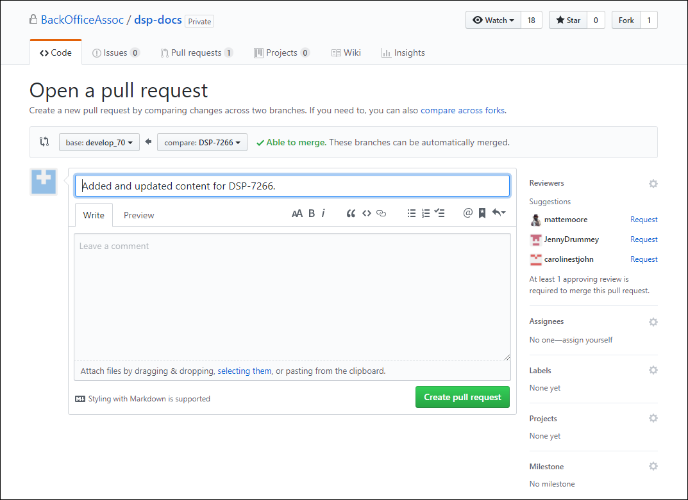

Workflow - Approved
Note: All Documentation Team members belong to the doc_checkouts Slack channel, where we post information about what is being worked on and what needs review. Use the @doc command for feedback, calls for help on peer review or anything else.
Authors work in Flare on a group of tickets at a time or a chunk of content at a time. You can decide how to group them. You may want to add all content for an Epic, or all of your assigned tickets for a release. It’s up to you.
Authors are responsible for producing Author Notes for the content.
Authors are responsible for content getting to the dev environment for testing for the Peer Review.
-
The Author posts in the Slack doc_checkouts channel when checking out a branch.
Note: Include the name of the project and the name of the branch you are working in in this post. Use the @doc command in Slack to call attention to questions and feedback needed.
-
Author checks out their own branch to add content.
-
Author pushes update to the repo and merges that branch to develop_nnn (SST) , develop (SKT) or Stagingnnn (Install Manuals).
-
Author builds the help in jenkins so that it is accessible on the dev site.
Note: This content is to be formatted correctly and written to standards with no typos. The content is to be pushed to the repo correctly in github following the documented steps.
-
Author posts in the doc_checkouts Slack discussion channel when they have merged the PR to develop_nnn/develop/Staginginnn, and built in jenkins so that the content is ready to be viewed by the team on the dev site.
Note: Include a link to the Author Notes in this post. Use the @doc command in Slack to call attention to questions and feedback needed.
Note: After the PR has been merged, another Author can check out the Flare project and add a chunk of content.
Author checks out branch to add content
Important: GitHub Initial Setup contains the initial configuration and setup steps for Git and GitHub. These steps must be performed by a new employee.
Important: Always use Git Bash. Do not use the GitHub Desktop application.
Warning: You MUST perform these steps each time you checkout a branch to ensure you are working in the latest copy of the release branch.
-
In Windows-Explorer, right-click your local repo folder and select Git Bash Here.

Right-click menu with Git Bash Here option
-
Enter the git command git checkout releasebranchname, e.g., git checkout develop_71
-
Enter the git command, git pull origin <release branch name>
Tip: If at this point you wish to see a list of branches that are available in your local repo, enter the command git branch. All of the available local branches are listed.
Tip: If you are working on a big project where you perform several checkins before opening a Pull Request, use the following commands each time you begin work: git status <your branch name> then git checkout <your branch name> then git pull origin <your branch name>
-
Enter the command git checkout -b <new branch name>
Note: Name the branch after the JIRA ticket number if applicable. Use the naming convention DSP-NNNN. If changes are not related to a Jira ticket, give the branch a meaningful name, such as ‘releasenotesupdates’.
-
Open the project in Flare and make your updates. Your updates are saved in the newbranchname.
-
When you finish your updates, save your changes and close Flare.
NOTE: Refer to Update Online Help in Flare for steps on working in Flare.
Author Pushes Updates to github Repo and Merges Content to develop_nnn/develop/Stagingnnn
-
Return to Git Bash or open a new session.
-
Navigate to your repo, and make sure you are in the correct branch. It is in parenthesis after your prompt.
-
Enter the git command git status to see all of the changes you have made.
Note: If you do not see your changes, you may have forgotten to save or you are in the wrong branch.
-
Stage the updates for commit by entering the git command git add .
Note: Include the period in the command.
Tip: Comments change from red to green after you stage them.
-
Commit staged updates by entering the command git commit -m "<commit message that informs everyone what you have done>"
Note: Do not use special characters in message.
-
Push your changes to the remote by entering the command git push origin <new branch name>.
-
Go to GitHub.com and click the Compare and pull request button next to your recently pushed branch.
-
Make sure the base is the current release branch you are working in (develop_nnn) and compare is your new branch name.

-
Add link to Author Notes in the description of the PR.
-
Click the Create pull request button.
-
Merge the pull request to the develop_nnn/develop/Stagingnnn branch and build in the dev environment in jenkins. Refer to Update Help on the Dev and Prod Sites for steps for working in Jenkins.
-
Add the Pull Request URL to the Jira ticket and the Author Notes.
-
Update the Documentation Status on the JIRA tickets associated with the work to Peer Review.
Author Notes
Note: Author Notes should only contain approved content or formatting fixes/help housekeeping that does not require approval.
Author Notes must contain:
-
A list of any Back End changes you made and what you did. These are changes in Flare that the user does not see, but that TWs need to know about
-
A list of Front End changes, with links to the approved googledoc that tracks the edits or the Jira ticket with the approved content and a link to the topic on the dev site where the changes were made.
-
Jira ticket number as relevant.
-
Simple, clear and easy to follow content describing the work done for the ticket.
Note: Author Notes must not contain explanations or background for tickets, contents, or troubleshooting. If you find a “gotcha” or a tip, share it in a slack channel so we can all learn from it, and add it to the standards/processes if it’s relevant.